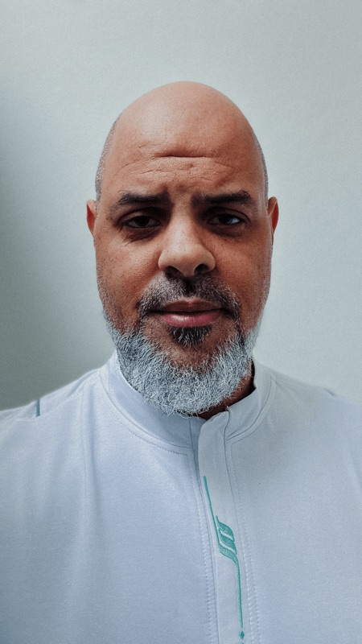
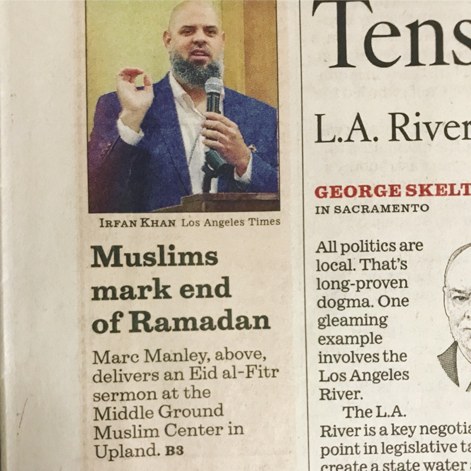
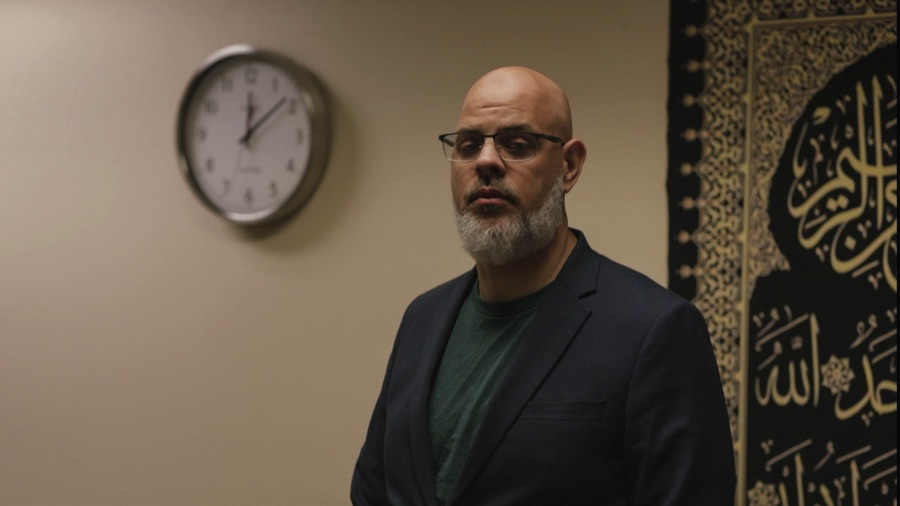

Our Imām
Imām Marc
Manley
Leading prayer, teaching, and conversation at Middle Ground — and hosting the Middle Ground Podcast.
About Imām Marc
The following year, after studying any and all religious traditions I could find, I converted to Islam (in 1992) and began a process of studying the religion. I had the opportunity to sit and study with several Muslim teachers in the Detroit metro area. After a brief stint in music (both playing jazz and spinning it for WEMU) I taught Arabic and Islamic Studies in the Detroit area for two years.
As the author of (now defunct) The Manrilla Blog: Exploring Islam In America Through the Social Sciences, this blog has now been moved to its present location here, where I write about pertinent issues facing America’s Muslim community today. Steeped in the intellectual tradition of Islam, I have endeavored to broker a new path of American Muslim thought by giving careful analysis of social and cultural trends of the diverse population of Muslims in America, seeking to provide a voice that at once speaks to the here and now of Muslims, yet rooted in the timeless philosophy of Islamic thought. My writing has been recognized through a number of venues, from the Philadelphia Inquirer as a top bookmark as well as the recipient of Best Design, in the 5th Annual Brass Crescent Awards.

During my tenure at the University of Pennsylvania I teamed up with Adnan Zulficar, the Interfaith Fellow and Campus Minister to the Muslim Community at the University of Pennsylvania, to create and teach the Islamic Literacy Series. Notes and audio recordings can be found here. In 2008, I completed an ijazah (license to teach/preach) with Imam Anwar Muhaimin of the Quba Institute, in Philadelphia, in the area of khutbah. Since then, I have been working as a khatib, delivering Friday sermons at a variety of locations in and around the greater Philadelphia area. In addition, I have spoken at the Constitution Center in Philadelphia, Hillel, Charter School, and Yale University just to name a few venues. I also took a leave of absence from my IT position at UPenn to travel to Saudi Arabia to focus on my religious studies.

And now that brings us to the present: I am currently the Imām/Religious Director here at Middle Ground. While I will miss the halal food in Dearborn and Detroit, and the Senegalese food and the occasional cheesesteak in Philly, I am happy to be serving the Muslim community here in SoCal.
How Imām Marc Serves the Community
01
Friday Khutbah
Weekly reflections, in person and online
02
Counseling & Guidance
By appointment, for the community
03
Teaching & Ḥalaqas (study circles)
Qur'ān, Sīrah, and other Islamic sciences
04
The Middle Ground Podcast
Co-hosted with brother Dawud Aleman

Beyond the Khuṭah
Hear More on the Podcast
The Middle Ground Podcast is where the longer conversations happen — faith, doubt, culture, and everything the khutbah doesn't have time for.
Explore the Podcast